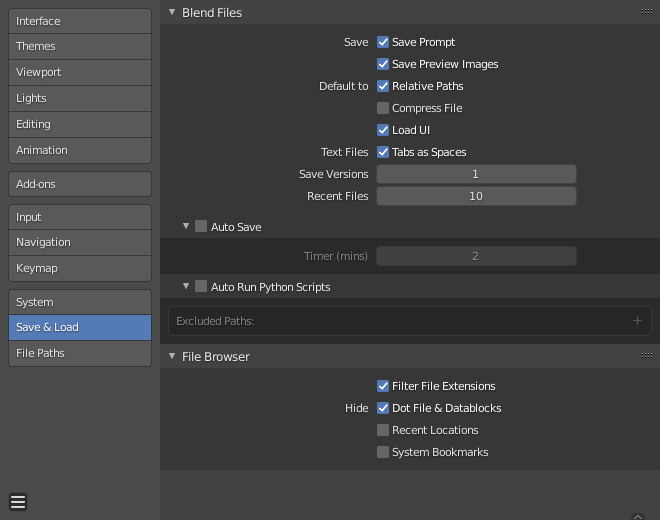

保存&加载¶

偏好设置保存/加载部分。¶
Blend 文件¶
- 保存
- 保存提示
如果当前文件有未保存的更改，在关闭或打开新的blend文件之前要求确认。
- Save Preview Images
Previews of images and materials in the File Browser are created on demand. To save these previews into your blend-file, enable this option (at the cost of increasing the size of your blend-file).
- 默认
- 文本文件
- 制表符自动转换为空格
在文本编辑器中输入 Tab 会添加适当数量的空格而不是制表符。
- 保存版本
保存较新版本文件时创建的版本数（用于备份）。
此选项使用扩展名将文件的已保存版本保存在同一目录中：
.blend1，.blend2等，数字增加到你指定的版本数。较旧的文件将以更高的数字命名。例如。默认设置为2，你将有三个版本的文件：
*.blend最新的保存。
*.blend1第二新的保存。
*.blend2第三新的保存。
- 最近打开的文件
显示的文件数量。
文件浏览器¶
- Filter File Extensions
启用该选项，文件浏览器中的文件区块将仅显示适当的文件（即加载完整Blender设置时的blend文件）。 可以更改在文件区块中所选文件的文件类型。
- 隐藏
- Dot File & Data-blocks
Hide files which start with
.on File Browsers and ID selector.Hint
可以通过键入
.字符来选择以.开头的数据块。显式写入时，将忽略隐藏这些数据块的设置。- Recent Locations
隐藏 文件浏览器 中 最近打开的文件 面板，该面板显示最近访问的文件夹。
- System Bookmarks
隐藏 文件浏览器 中的系统书签。